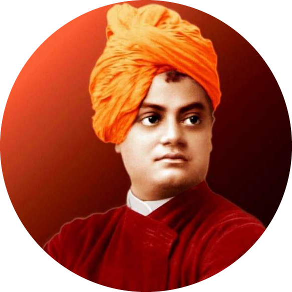

|  |
Swami Vivekananda
Narendranath Datta
Narendranath Datta, Datta also spelled Dutt, (born January 12, 1863, Calcutta [now Kolkata]—died July 4, 1902, near Calcutta), Hindu spiritual leader and reformer in India who attempted to combine
Indian spirituality with Western material progress, maintaining that the two supplemented and complemented one another. His Absolute was a person’s own higher self; to labour for the benefit of humanity was the noblest endeavour.
- Swami Vivekananda had a strong memory since his childhood.
- He had read all Hindu scriptures like Vedas, Upanishads, Bhagwat Geeta, Ramayana, and Mahabharata.
- He was about 25 years old when he became a monk.
|